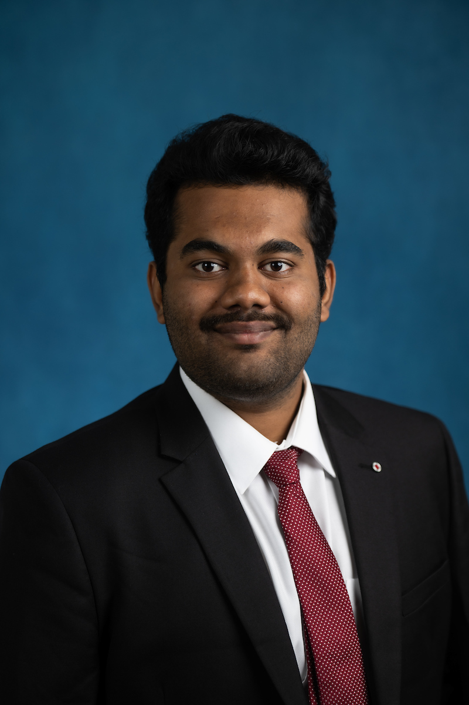

About Me

I'm a Mechanical Engineering graduate with a strong interest in robotics, control systems, and autonomous technologies. Through hands-on internships and academic projects, I've gained experience working with embedded systems, mechatronics, and software tools like ROS2, Simulink, and Python. I enjoy solving complex problems by combining mechanical principles with software development. My background includes work on autonomous robots, vehicle dynamics, and real-time control systems. I'm always eager to learn, collaborate, and take on challenging projects that push the boundaries of innovation in engineering and technology.
Education
-
University of Michigan, Ann Arbor
Master of Science in Mechanical Engineering (Concentration: Mechatronics), GPA: 3.95 / 4.00
Aug 2023 – Present -
Indian Institute of Technology, Kharagpur
Bachelor of Technology (Honours) in Mechanical Engineering, CGPA: 8.65 / 10
Aug 2019 – Apr 2023